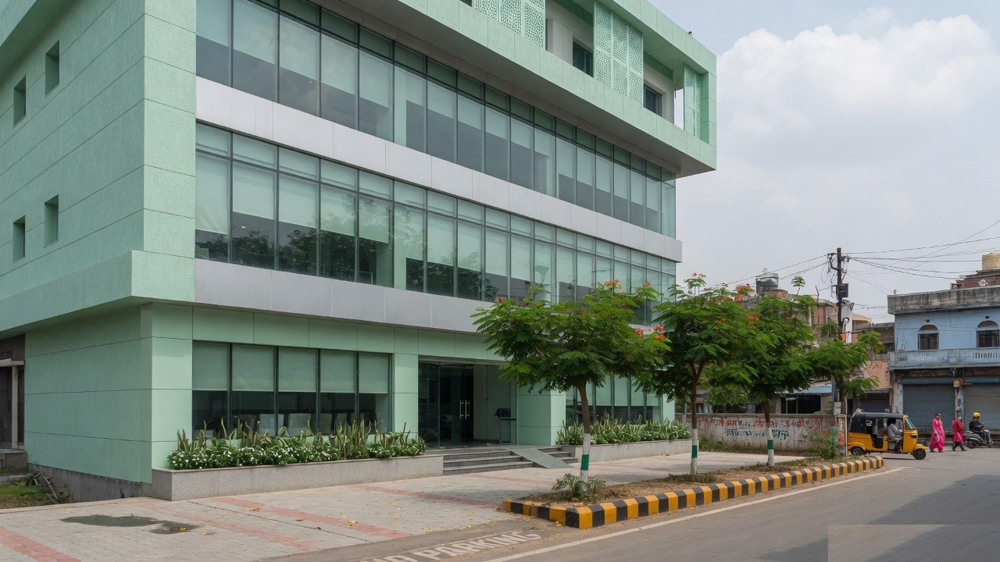

Why the centre exists
People in Egra and nearby towns should not have to guess where a blood test, an ultrasound or a specialist opinion will happen. EGRA Medilab Diagnosis keeps those steps in one place: sample collection, imaging, digital reports and doctor visits.
The work is deliberately ordinary and careful. Samples are labelled, reports are checked, and the desk tells you how to prepare before you leave home. Home collection is available when coming to the centre is difficult.
How a visit usually goes
- You book by phone or with the form on this website.
- The team confirms the test, fasting rules and time.
- Samples or scans are done at the centre, or blood is collected at home.
- Reports are shared for download, and a doctor can review them when that was part of the booking.